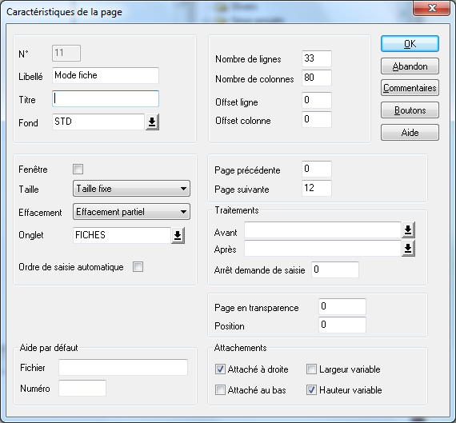

Le mode fiche permet notamment à l'utilisateur de consulter, modifier, créer un élément de la table sous forme de fiche.
Page 11 : Facultative, sauf en cas de mode d'affichage mixte.
Page 12 et suivantes : Facultatives.
Type de pages : Pages avec effacement partiel.
Nombre de colonnes : Influe sur le mode d'affichage du zoom (voir le paragraphe Détermination du mode d'affichage en fin de rubrique).
Offsets ligne et colonne : 0.
Données en saisie : Champs de la table.
Particularités :
Attention : Il est interdit de ressaisir en page 11 les champs constituant l'index principal (ceux saisis en page 2), que ce soit en création ou en modification. Si vous faites figurer ces champs dans une page du mode fiche, déclarez-les en affichage et non en saisie.
Chaînez les différentes pages du mode fiche (masque multi-écran).
Les pages 12 et suivantes sont réservées au cas où plusieurs écrans sont nécessaires pour présenter le mode fiche. N'oubliez pas alors de les chaîner entre elles en déclarant pour chaque page les liens adéquats (propriétés de la page <Page précédente> et <Page suivante>).
Les pages du mode fiche peuvent de plus utiliser un onglet.
Toutes les pages du mode fiche doivent avoir la même taille.
(Cette taille doit aussi être identique à celle de la page du mode liste lorsque les deux modes sont séparés.)
Attributs dynamiques : Si vous affectez le nom d'objet "ZoomCache" ou "ZoomIllisible" à un objet placé dans une page du mode fiche, celui-ci sera automatiquement caché ou rendu illisible.
Si vous souhaitez que la taille du tableau du mode liste s'adapte au changement de taille de la fenêtre, il faudra :
En mode non mixte : Cocher les cases "Largeur variable" et/ou "Hauteur variable" (en général, on cochera les deux cases, de manière à étendre le tableau à la fois en largeur et en hauteur), pour chaque page du mode fiche et pour la page du mode liste.
En mode mixte :
Si le tableau est extensible en largeur, cocher la case "Largeur Variable" pour la page du mode liste et la case "Attaché à droite" pour chaque page du mode fiche.
Si le tableau est extensible en hauteur, cocher les cases "Hauteur variable" pour chaque page du mode fiche et pour la page du mode liste.
Le cas échéant, pensez à adapter les attachements des onglets associés aux pages du mode fiche.
Exemple en mode d'affichage mixte :

Détermination du mode d'affichage
Le mode d'affichage du zoom (mixte ou non) est déterminé de manière automatique, suivant la règle suivante :
Mode mixte si le nombre de colonnes de la page de la fiche est différent du nombre de colonnes de la page de fond.
Attention : Ne spécifiez pas d’offset colonne pour les pages du mode fiche car Xzoom7 le calcule automatiquement (nombre de colonnes du mode liste).
Mode non mixte sinon.
En mode non mixte, les pages de la liste et des fiches doivent avoir la même taille.